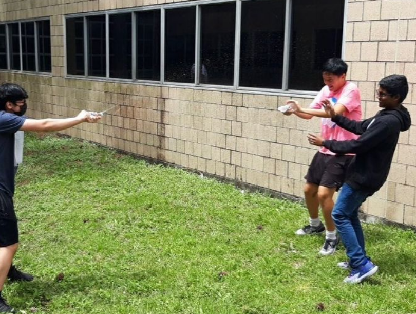

Songkran Water Festival
Coming in April 2023, the Songkran Water Festival is an event celebrated in Thailand to commemorate the new year. The event includes pouring water on Buddha statues to cleanse the water, then pouring the water on village members and family members. In fact, there is a water fight that happens every year in Thailand. We will be doing a water fight this year as well! Learn more here:
